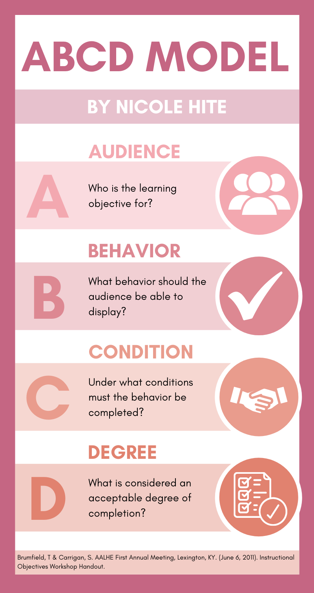

<div id="test-popup" class="white-popup">

  <div class="container">
    <div class="row">
      <div class="col">
        <div class="row">
          <div class="col-lg-12">
            <!-- <div class="img_blog">
                  
                </div> -->

            <div class="rounded m-2 p-4 bg-white">
              <h4 class="font-weight-bold">ABCD Model</h4>

              <p class="text-muted">This graphic was used during a discussion forum that required us to create a visual representation of the ABCD model for writing objectives. We were also tasked to write an original instructional objective
                using the ABCD model.
                <br><strong>Tools utilized</strong>: Canva</p>
              
              <p class="mt-3 text-muted">The main way I would improve this assignment would be to create a clearer, more concise learning objective. This was my first time writing an instructional objective (and first time using the ABCD model to
                write one) and based on feedback from the professor and my peers, I was too broad with my objective and it sounded more like an assignment or lesson plan rather than an objective. To make my objective clearer, I would decide on a
                specific topic in computing such as arrays, ArrayLists, method calls, etc. and would make my learning objective relate more to what knowledge or skill they should gain after completion of the actvity</p>
              <p class="mt-3 text-muted">Perhaps something such as: <strong>"By the end of the module, students will be able to initialize and populate an ArrayList with any number of objects."</strong> In this case, the
                ABCD model would be as follows:<br>
                <strong>A</strong>: students<br>
                <strong>B</strong>: initialize and populate an ArrayList<br>
                <strong>C</strong>: By the end of the module<br>
                <strong>D</strong>: with any number of objects</p>
            </div>
          </div>
        </div>
      </div>
    </div>
  </div>
</div>
